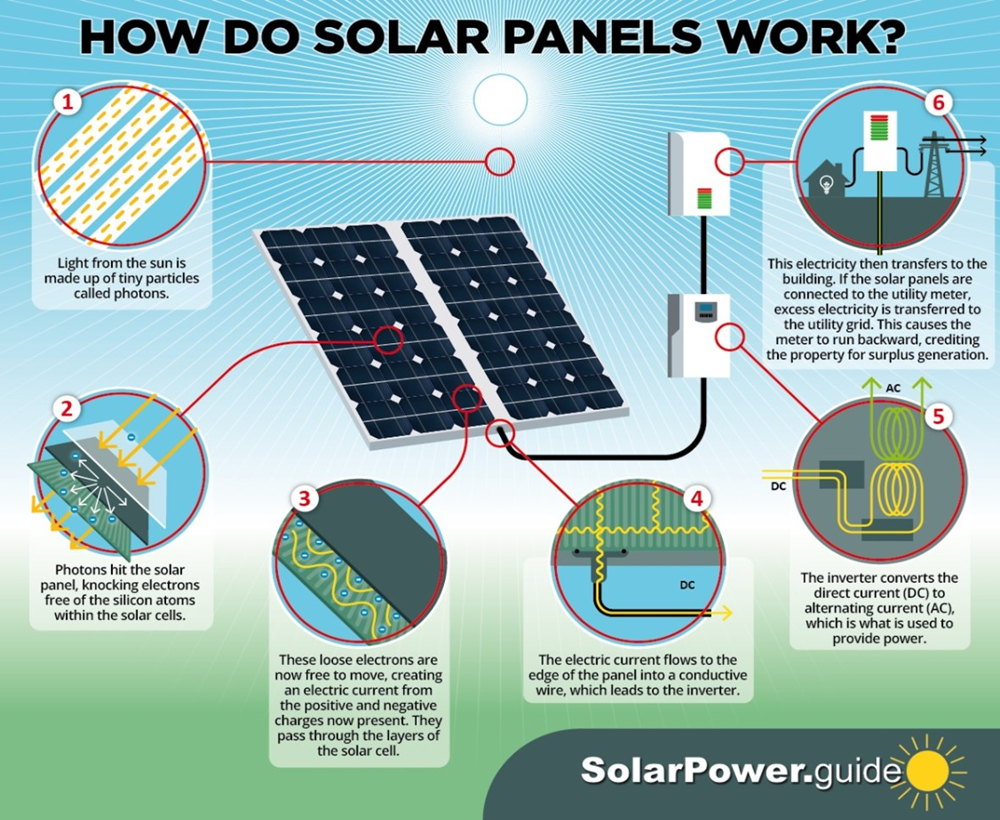
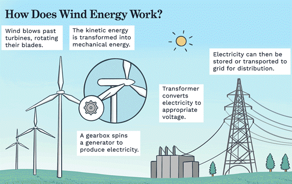
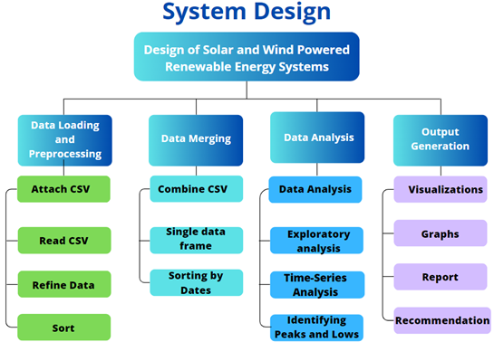

Student - Mariam Vashakidze
Andrew ID - Mvashaki
Professor - Susan Finger
Course - 12781 Special Topics: Applied Python for Engineers
Semester - Fall 2023
Project - Design of Solar and Wind Powered Renewable Energy Systems

1. Introduction
The National Aeronautics and Space Administration NASA is an independent agency of the U.S. federal government responsible for the civil space program, aeronautics research, and space research. NASA is collecting different types of data on a daily basis and initiates various projects each year to improve the wellbeing of humankind. The Prediction Of Worldwide Energy Resources POWER project, which was initiated in 2003, provides solar and meteorological data sets from NASA research for support of renewable energy, building energy efficiency and agricultural needs. The renewable energy archive is designed to provide access to parameters specifically adapted to assist in design of solar and wind powered renewable energy systems. These data types are - solar fluxes and related materials, parameters for solar cooking, temperatures, humidity and precipitation, and wind and pressure. Unfortunately, there are many non-engineering background people, who are willing to install solar and wind powered renewable energy systems, but do not know how to access and analyze the relevant data from NASA. With my project in this course, I wrote code, which makes it possible for these people to understand whether it is relevant or not to install such systems in Pittsburgh, Allegheny County. People will run the code and get professional advice based on the most accurate and credible data from NASA. Learning and using python helped me to analyze this data, therefore, solve this problem.
2. Background
2.1 Engineering Background
Designing solar and wind powered renewable energy systems includes several types of engineering backgrounds, but as a civil and environmental engineer I will focus on the disciplines that are relevant to our profession. Firstly, Energy Engineering focuses specifically on energy efficiency, renewable energy technologies, and sustainable design principles. Knowledge in this field is essential for optimizing the performance of solar panels and wind turbines. Moreover, Civil Engineering is important for the infrastructure development of renewable energy projects, which includes site selection, land assessment, construction of support structures, and environmental impact assessments. What is more, Mechanical Engineering is crucial for the design and structural analysis of wind turbines, including blade design, stress analysis, and material selection. For solar energy, this involves the mechanical systems for solar panel mounting and positioning. Furthermore, Environmental Engineering addresses the environmental impact of renewable energy projects, ensuring compliance with environmental regulations and sustainable practices. Finally, Innovative and Sustainable Design gives us the ability to incorporate new technologies and sustainable practices in the design and deployment of renewable energy systems. In pictures, we can see the detailed description of how each and every component in solar and wind energy systems work.
 2.2 Computational Methods
In this project I analyzed solar, temperature and humidity, and wind parameters provided by NASA to understand the potential of a specific area for becoming the location of wind and solar power systems. I had to use computational methods, such as Data Processing, Data Analysis, Statistical Analysis and Data Visualization. Other than programming language Python, I used HTML to make a simple visual website interface for this project.
2.3 Data Sources
The source of my data was The National Aeronautics and Space Administration NASA. I used the Renewable
Energy archive, which is designed to provide access to parameters specifically tailored to assist in the
design of solar and wind powered renewable energy systems. These parameters are:
• Solar Fluxes and Related - shortwave downward irradiance, longwave downward irradiance, insolation
clearness index, photosynthetically active radiation, UVA irradiance, UVB irradiance, UV index.
• Parameters for Solar Cooking - shortwave downward irradiance, wind speed at 2 meters.
• Temperatures - temperature at 2 meters, dew/frost point at 2 meters, wet bulb temperature at 2 meters,
earth skin temperature, minimum and maximum temperatures at 2 meters.
• Humidity/Precipitation - specific humidity at 2 meters, relative humidity at 2 meters,
precipitation.
• Wind/Pressure - surface pressure, wind speed at 10 and 50 meters, wind speed maximums and minimums at
10 and 50 meters, win directions at 10 and 50 meters.
3. Learning Goals
Learning Python modules helped me a lot in processing, analyzing, and visualizing data. Pandas, Seaborn, and Matplotlib were extremely helpful for me. HTML allowed me to create the front-end website of my project.
4. Project Plan
In order to complete the project, I needed to perform several technical tasks. Firstly, I researched
credible data on NASA official data website. Moreover, I filtered the data and chose those specific
parameters which helped me in accomplishing my project goal. Furthermore, I refined the downloaded data
and ensured that it was consistent, free of outliers, duplicates, and blank values. What is more, I
wrote a systems design diagram to analyze what type of code I should have written. Finally, gave the
professional recommendation about the design of solar and wind powered renewable energy systems based on
NASA POWER project data in Pittsburgh, Allegheny County and designed good Graphical User Interface
(GUI).
Project Tasks:
1. Access, filter, download, refine, sort the data from NASA website (Solar Fluxes and Related,
Parameters for Solar Cooking, Temperatures, Humidity/Precipitation, Wind/Pressure)
2. Obtain and read the data (solar irradiance, temperature, wind speed, and etc.) - Python Pandas
library, Matplotlib library, Seaborn library.
Design good Graphical User Interface (GUI).
Front-end Webpage of website - HTML.
5. System Design
6. Preliminary Code and Documentation
In my project I have 3 datasets, which are solar data, temperature and humidity data, and wind data.
• Solar Data: Contains various solar-related measurements such as surface downward solar radiation,
clear sky surface solar radiation, solar radiation temperature, and wind speed at 2 meters (WS2M).
• Temperature and Humidity Data: Includes daily temperature and humidity measurements like temperature
at 2 meters (T2M), dew point temperature at 2 meters (T2MDEW), wet bulb temperature at 2 meters
(T2MWET), surface temperature (TS), and relative humidity at 2 meters (RH2M).
• Wind Data: Comprises wind-related measurements such as surface pressure (PS), wind speed at 10 meters
(WS10M), wind direction at 10 meters (WD10M), and corresponding maximum, minimum, and range values for
wind speeds at 10 and 50 meters.
To analyze the three datasets (solar, temperature and humidity, and wind data) for the most important
aspects relevant to the design of solar and wind-powered renewable energy systems, I performed the
following analyses:
1. Solar Data Analysis:
• Calculated the average daily solar irradiance (All Sky Surface Shortwave Downward Irradiance).
• Determined the days with the highest and lowest solar irradiance.
• Analyzed the seasonal variation in solar irradiance.
2. Temperature and Humidity Data Analysis:
• Calculated the average daily temperature and humidity.
• Identified the days with extreme temperatures (highest and lowest) as they can affect the efficiency
of solar panels.
• Examined the variation in temperature and humidity over different seasons.
3. Wind Data Analysis:
• Calculated the average daily wind speed.
• Identified the days with the highest and lowest wind speeds, which are critical for wind power
generation.
• Analyzed the seasonal variation in wind speed.
4. Combined Analysis:
• Correlated solar irradiance with temperature to understand if higher temperatures correlate with
higher solar irradiance.
• Correlated wind speed with solar irradiance to see if there are patterns where low solar irradiance
days have higher wind speeds, which is useful for hybrid solar-wind systems.
7. Results
The results from the solar data analysis:
1. Average Daily Solar Irradiance:
The average daily solar irradiance (All Sky Surface Shortwave Downward Irradiance) over the period is approximately 3.84 kW-hr/m²/day, Min = 0.42, Max = 8.84.
2. Days with Highest and Lowest Solar Irradiance:
• The days with the highest solar irradiance (8.84 kW-hr/m²/day) occurred on June 17, 2021, and June 19, 2022.
• The day with the lowest solar irradiance (0.42 kW-hr/m²/day) occurred on January 9, 2022.
3. Seasonal Variation in Solar Irradiance:
• The monthly average solar irradiance values indicate a clear seasonal pattern, with the highest averages in the summer months (June, July) and the lowest in the winter months (December, January).
4. Summary Statistics:
• Solar irradiance (ALLSKY_SFC_SW_DWN): Mean = 3.84 kW-hr/ m²/day, Min = 0.42, Max = 8.84
• Clear sky solar irradiance (CLRSKY_SFC_SW_DWN): Mean = 5.52 kW-hr/ m²/day
• Solar insolation clearness index (ALLSKY_KT): Mean = 0.48, Min = 0.1, Max = 0.79.
5. Recommendation:
An average of 3.84 kW-hr/m²/day is quite promising for solar panel installation, as it indicates that a good amount of sunlight is available to be converted into electricity. The variation between the minimum (0.42) and maximum (8.84) irradiance values suggests a significant fluctuation in sunlight throughout the period considered. This could be due to seasonal changes, weather patterns, or geographical factors. Mean = 5.52 kW-hr/m²/day is a measure of the solar irradiance on a clear day, without any cloud cover. A mean value of 5.52 kW-hr/m²/day is quite high, indicating strong solar potential on clear days. Mean = 0.48, Min = 0.1, Max = 0.79 - this index measures the fraction of solar radiation that reaches the Earth's surface compared to what would hit the surface if the sky were completely clear. A mean of 0.48 suggests that, on average, nearly half of the potential solar energy is reaching the ground. The range from 0.1 to 0.79 shows significant variability, likely due to weather patterns and seasonal changes.
The results from the temperature and humidity data analysis:
1. Average Daily Temperature and Humidity:
• The average daily temperature over the period is approximately 10.92°C.
• The average daily relative humidity is about 77.00%.
2. Days with Extreme Temperatures:
• The highest temperature recorded was 28.44°C on June 29, 2021.
• The lowest temperature recorded was -15.35°C on December 24, 2022.
3. Seasonal Variation in Temperature and Humidity:
• The monthly averages show a clear seasonal pattern with higher temperatures in the summer months (June, July, August) and lower temperatures in the winter months (December, January).
• Relative humidity is generally higher in the winter and lower in the summer, with the highest humidity in January and the lowest in July.
4. Summary Statistics:
• Temperature (T2M): Mean = 10.92 °C, Min = -15.35°C, Max = 28.44°C
• Dew/Frost Point (T2MDEW): Mean = 6.36 °C
• Humidity (RH2M): Mean = 77%, Min = 47.69%, Max = 99.38%
• Precipitation (PRECTOTCORR): Mean = 2.54 mm/day
5. Recommendation:
Solar panels typically operate best in moderate temperatures. High temperatures can reduce their efficiency, although modern panels are quite resilient. Pittsburgh's temperature range seems generally favorable for solar panels, with the caveat that efficiency might decrease slightly on very hot days. A moderate dew point indicates that the panels might experience dew or frost under certain conditions. While not a significant problem, it's something to consider for maintenance and efficiency, especially in colder months. High humidity itself doesn't directly affect solar panel efficiency but can influence local weather patterns. Areas with high humidity often have more cloud cover, which could reduce solar irradiance. Regular rainfall can actually be beneficial for solar panels as it helps clean the panels and maintain their efficiency. However, Pittsburgh experiences frequent heavy rainfall or prolonged overcast conditions, this could reduce the amount of solar radiation received.
As a result, this climate data seems generally favorable for solar power, with considerations for periodic lower efficiency due to weather conditions such as heavy cloud cover or high temperatures.
The results from the wind data analysis:
1. Summary Statistics:
• Wind Speed at 10 Meters (WS10M): Mean = 2.38 m/s, Min = 0.08, Max = 2.63
• Wind Speed at 50 Meters (WS50M): Mean = 4.08 m/s
• Wind Direction at 10 and 50 Meters also provided.
2. Recommendation:
Wind energy systems are less influenced by temperature and humidity but more by the wind speed and consistency in the area. Generally, locations with average wind speeds of at least 4-5 meters per second are considered suitable for small wind turbines. In my data the wind speeds at 10 meters are generally considered low for effective wind energy generation. Most small wind turbines require a minimum wind speed of around 3 to 4 m/s to start generating electricity. The data of wind speed at 50 meters is more promising. Wind speeds at higher altitudes are often faster and more consistent. A mean speed of around 4 m/s at 50 meters is on the lower end but might be sufficient for some types of small wind turbines. As a result, the wind speeds at 10 meters are likely too low for efficient wind turbine operation. The wind speeds at 50 meters are more favorable, though still on the lower end of the spectrum. It's important to note that wind turbine performance significantly improves with higher wind speeds. For instance, wind speeds of 5-6 m/s can generate significantly more power than 4 m/s. The feasibility and efficiency of wind turbines in Pittsburgh would depend on specific turbine models and their cut-in speed (the minimum wind speed at which they start generating power). In summary, while wind speeds at 50 meters could potentially support a wind turbine, the overall wind conditions seem to be on the borderline for small-scale wind energy generation.
Finally, people who want to install Solar and Wind Powered Renewable Energy Systems in Pittsburgh should look for turbines that are designed to operate efficiently at lower wind speeds and consider installing a hybrid system combining solar panels and a wind turbine, which might offer a more consistent and reliable energy output.


8. References
Atkinson J. (2021, August 19). NASA POWER Project Powers Up with New Version. National Aeronautics and Space Administration NASA.
https://www.nasa.gov/news-release/nasa-power-project-powers-up-with-new-version/
Data from NASA - https://power.larc.nasa.gov/data-access-viewer/
Robertson J. (2023). HOW DO SOLAR PANELS WORK?. Solar Power Guide. https://solarpower.guide/solar-energy-insights/how-do-solar-panels-work
Vartan S. (2023, August 13). What Is Wind Energy? Definition and How It Works. Tree Hugger - Sustainability
Click the button below to to finish the project: